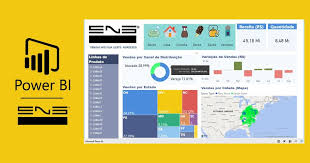
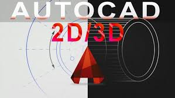
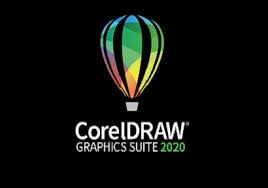

O Serviço Nacional de Aprendizagem Comercial – Senac é uma instituição de educação profissional, fundada em 10 de janeiro de 1946 com o objetivo de colaborar na obra, difusão e aperfeiçoamento do ensino profissional no setor terciário. No Rio Grande do Sul, o Senac foi instalado em 13 de setembro do mesmo ano e nos mais de 70 anos de atuação já capacitou mais de 7 milhões de gaúchos. A instituição cumpre a importante missão de educar para o trabalho em atividades do comércio de bens, serviços e turismo. O Senac-RS faz parte da Federação do Comércio de Bens e Serviços do Rio Grande do Sul – Fecomércio-RS, o que vincula a entidade ao mundo do trabalho por meio de 569 mil empresas do comércio de bens, serviços e turismo – que geram um milhão de empregos formais.
Cursos |
Informações dos Cursos |
Clique Aqui e Saiba Mais |
Análise de Dados com Power BI |
Precisa compreender, articular e utilizar o PowerBI? Este é o curso certo para você! Construa relatórios e dashboards, modele bancosde dados, utilize o Microsoft Integration Service. |
 |
Auto CAD 2d e 3D |
Identificar os materiais e instrumentos de desenho; Desenhar plantas de projetos no papel utilizando as ferramentas adequadas e seguindo com consciência as normas e padrões vigentes; Realizar cotagem de elementos; Determinar e identificar os tipos de escalas para projetos; Medir, traçar e calcular distâncias, ângulos e áreas de figuras planas e volumétricas; Interpretar plantas baixas, cortes, vistas, projeções e perspectivas; Realizar projeção ortográfica de modelos diversos; Interpretar os tipos de corte e hachuras. |
 |
Design Gráfico |
Todo o trabalho de criação e seleção para a comunicação de idéias. As figuras gráficas vão além de imagens alusivas do real ou de representações do imaginário e desejam construir novos sentidos tanto para o desenvolvedor quanto para o cliente. |
|
Editor de Vídeos |
O curso Editor de Vídeo visa proporcionar ao aluno um espaço de construção de conhecimentos, habilidades e competências para a elaboração do processo de corte e montagem de vídeos em meio digital (filmes, desenhos, comerciais, clipes, etc.) de forma não linear, definição da sequência de takes (tomadas), criação e inserção de efeitos visuais, trilhas sonoras e legendas. Além disso, compreende a geração e a edição de vídeos digitais, com o intuito de produzir e finalizar um novo vídeo, podendo ser publicado em diversas mídias, como DVD e outros, para exibição. |
|
Corel Draw |
Utilizar as ferramentas do CorelDRAW; Configurar o CorelDRAW; Manipular objetos, alterando atributos; Configurar páginas; Editar e converter textos; Diagramar peça gráfica; Representar e editar de forma digital, aspectos de peças gráficas; Construir e visualizar peças gráficas e aplicações; Criar e editar objetos de bibliotecas de símbolos; arquivo para impressão; Salvar arquivos, cópia de segurança e recuperar arquivos; Importar e exportar arquivos. |
 |
Senac Tech - Impulsionando sua Carreira ao Sucesso! |
||